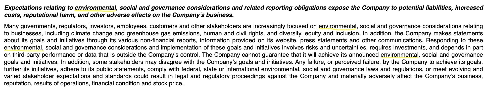
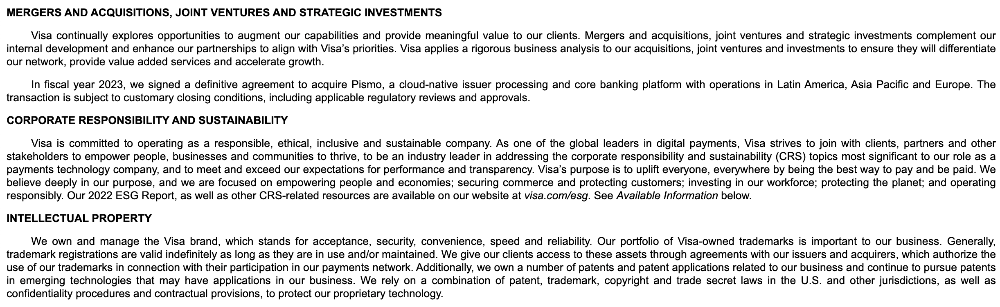
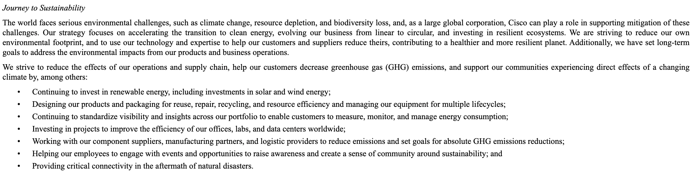
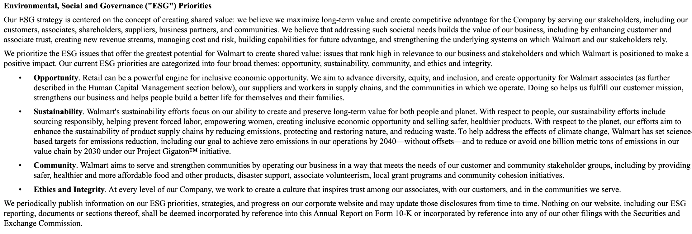
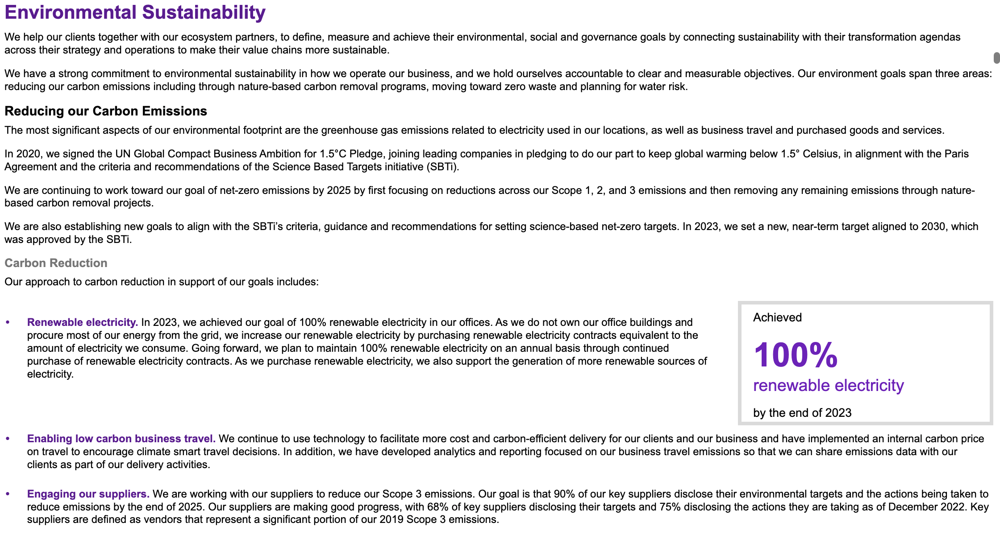
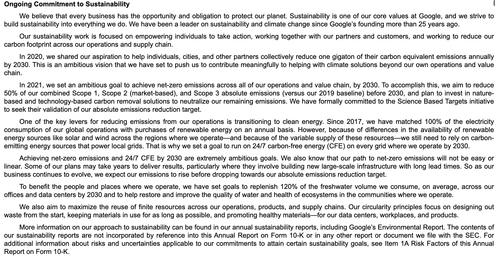
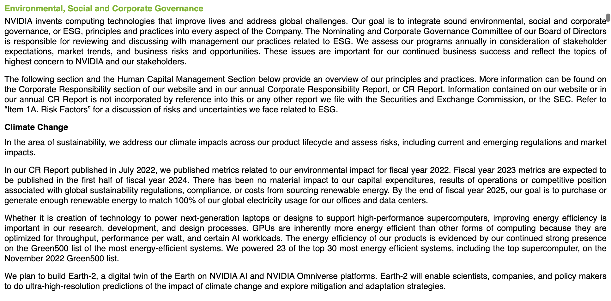
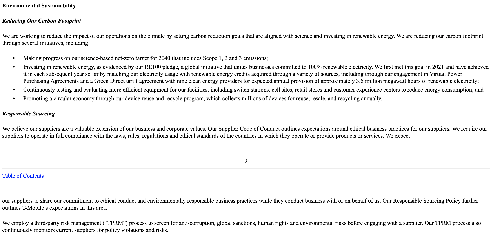

Abstract
This capstone project investigates how climate sentiment is portrayed in corporate financial reporting, focusing on SEC 10-K filings from leading S&P 50 companies. These filings offer detailed insights into financial performance, risks, and management discussions, providing a rich dataset for analyzing corporate behaviors with sustainability and environmental concerns. Through meticulous examination of these legally binding financial disclosures, this study sheds light on the extent to which companies address environmental issues and the implications for environmental stewardship. Drawing inspiration from established greenwashing indicator frameworks, the study develops a climate sentiment framework tailored to the context of SEC 10-K filings. By contributing to the broader discourse on environmental challenges, stewardship, and corporate transparency, this research offers valuable insights for academia, industry stakeholders, and policymakers grappling with environmental issues in the corporate sector. It provides a nuanced understanding of corporate practices and highlights avenues for improving environmental reporting and accountability.
Context
As concerns regarding corporate sustainability and environmental responsibility continue to mount, the phenomenon of greenwashing emerges as an area of critical scrutiny. While numerous Greenwashing Indicator (GWI) frameworks have been devised to measure and identify greenwashing practices, they predominantly target sustainability reports and green-labeled products. However, the intersection of greenwashing indicators with financial communications, such as SEC Filings Form 10-K, remains relatively underexplored.
This research aims to bridge this gap by examining how sustainability is manifested in financial reporting, particularly within SEC Filings Form 10-K. This focus is pivotal because these SEC filings hold legal weight and undergo thorough examination. This approach offers a unique perspective on corporations' climate action positions. In our market-driven capitalist environment, publicly traded companies often prioritize profits over environmental concerns, guided by shareholder interests. This study intends to illuminate the extent to which climate action is integrated into a company's core operations, strategy, and risk management. Given the legally binding nature of 10-K filings, they serve as an ideal arena for such exploration.
Glossary
| Term | Definition |
| 10-K filing | An annual report filed by publicly traded companies to the Securities and Exchange Commission (SEC). It provides a comprehensive overview of the company's financial performance, risks, and management discussion and analysis. |
| (10-K filing) Section 1 - Business | Section 1 of a company's 10-K filing, which provides information about the company's business operations, including its products and services, market segments, and competitive landscape. |
| (10-K filing) Section 1A - Risk | Section 1A of a company's 10-K filing, which outlines the key risks and uncertainties facing the company, including financial, market, regulatory, and operational risks. |
| EDGAR | The Electronic Data Gathering, Analysis, and Retrieval system (EDGAR) is an online database maintained by the U.S. Securities and Exchange Commission (SEC) that provides free public access to corporate filings, including 10-K reports, 10-Q reports, and other disclosure documents. |
| ESG | Environmental, Social, and Governance (ESG) criteria are a set of non-financial factors used to evaluate a company's sustainability and ethical impact. ESG factors include environmental practices, social responsibility, and corporate governance. |
| Greenwashing | Greenwashing refers to the practice of misleading consumers or investors by falsely claiming to be environmentally friendly or sustainable, often through deceptive marketing or public relations efforts. |
| Greenwashing Indicator framework (GWI) | A framework used to assess and measure the extent of greenwashing in corporate communication or marketing materials. It typically involves evaluating specific criteria or indicators to identify instances of misleading or exaggerated environmental claims. |
| Market Cap | Market capitalization, often referred to as market cap, is the total value of a publicly traded company's outstanding shares of stock. It is calculated by multiplying the current share price by the total number of outstanding shares. |
| S&P 500 | The S&P 500 is a stock market index that measures the performance of 500 large-cap U.S. companies listed on stock exchanges. It is widely regarded as one of the best indicators of the overall health of the U.S. stock market. |
| SEC | The U.S. Securities and Exchange Commission (SEC) is a federal agency responsible for enforcing federal securities laws, regulating the securities industry, and overseeing the stock and options exchanges in the United States. |
Approach
- Gathered a list of S&P 50 companies from a Wikipedia page.
- Collected the latest SEC 10-K filing URLs for each company using the SEC EDGAR database.
- Retrieve the raw text from Sections 1 (Business) and 1A (Risk) of the 10-K filings utilizing the SEC 10-K Section Extractor API.
- Analyzed the extent of climate change-related information present within the specified sections of the SEC 10-K filings of S&P 50 companies.
- Created a climate sentiment framework by leveraging common Greenwashing Indicator heuristics to evaluate climate sentiment demonstrated by S&P 50 companies in SEC 10-K filings.
- Classified S&P 50 companies into five distinct levels based on their acknowledgment of climate change as a business risk and their commitment to climate action within these filings. Performed a meta-analysis to gain further insights.
Key Findings
- 94% (47 out of 50) S&P50 companies acknowledged climate change as a risk in their business.
- 42% (21 out of 50) S&P50 companies mentioned climate change in their business sections .
- 32% (16 out of 50) S&P50 companies demonstrated authentic commitment to climate action in their SEC 10-K Filings.
- 20% (10 out of 50) S&P50 companies demonstrated firm investment in climate action as an integral part of their business strategy.
Detailed summary
Quick introduction to SEC 10-K filing
SEC 10-K filings are comprehensive annual reports submitted by publicly traded companies to the U.S. Securities and Exchange Commission (SEC). These filings provide detailed insights into a company's financial performance, risks, and management discussions, making them crucial sources of information for investors, analysts, and researchers. In the context of this research, SEC 10-K filings serve as primary data sources for analyzing how companies address climate-related issues in their business operations and risk management strategies.
For the purpose of this analysis, we will focus on the first two parts of the 10-K (highlighted in the yellow box):
- Section 1 (Business): This section provides crucial insights into a company's business operations, including their products or services, market position, and competitive landscape. It serves as a foundational component for understanding how companies approach climate-related issues within their business strategies.
- Section 1A (Risk): In this section, companies outline various risks that may affect their operations, including environmental risks such as climate change. Analyzing this section is essential for evaluating how companies perceive and address climate-related risks in their SEC 10-K filings.
A framework with five types of climate sentiments in SEC 10-K Filings
A framework comprising five types of climate sentiments identified within SEC 10-K filings was developed by referring to key indicators of greenwashing and exemplars of best practices in corporate reporting. Special attention was given to applying these concepts specifically to the business and risk sections of the 10-K filings, ensuring relevance and practicality. This framework draws inspiration from the Greenwashing Assessment Tool outlined in the Issue Brief titled "Why addressing greenwashing remains as important as ever (and what can be done about it)" by Wren Montgomery, Tom Lyon, Julian Barg, and Matthew Lynch, published by the Ivey Centre for Building Sustainable Value & Erb Institute.
The framework is structured as follows:
Distirbution of climate sentiments in SEC 10-K Fillings of S&P 50 companies
The breakdown of climate sentiments across SEC 10-K filings of S&P 50 companies illustrates distinct tiers of engagement with climate issues, with each company categorized accordingly based on their disclosed attitudes and actions towards climate-related matters.
Unfortunately, the majority of companies within this cohort are classified into the "victimized" group, suggesting a prevalent pattern of acknowledging climate risks as a business risk in their SEC 10-K filings. However, they do not mention any climate actions in the "business" section of their filings. It's important to note that this analysis solely focuses on sections 1 and 1A of the 10-K filings and does not consider alternative or external materials that companies may provide.
See below for which Sentiment bucket each S&P 50 companies fall into:
| Climate Sentiment Type | Companies |
| 1. Invisible | Comcast, Netflix, Wells Fargo |
| 2. Victimized | Abbott, AbbVie, Adobe Inc., Advanced Micro Devices, Amazon, Apple Inc., Applied Materials, Bank of America, Chevron Corporation, Coca-Cola Company (The), Costco, Eli Lilly and Company, ExxonMobil, IBM, Intuit, Johnson & Johnson, JPMorgan Chase, Linde plc, Meta Platforms, Oracle Corporation, PepsiCo, Salesforce, Thermo Fisher Scientific, Uber, UnitedHealth Group, Verizon |
| 3. Tokenistic | Broadcom Inc., Danaher Corporation, General Electric, Mastercard, Visa Inc. |
| 4. Developing commitment | Berkshire Hathaway, Cisco, McDonald's, Tesla, Inc., Walmart, Walt Disney |
| 5. Proactive Stewardship | Accenture, Alphabet Inc. (Google), The Home Depot, Intel, Merck & Co., Microsoft, Nvidia, Procter & Gamble, Qualcomm, T-Mobile US |
Sentiment Level #1: Invisible
Overview: A complete lack of acknowledgment
Details:
At the "invisible" level, these companies demonstrate a complete lack of acknowledgment of climate-related issues, with no mention of climate change or climate action found in either Section 1A (Risk) or Section 1 (Business) of their 10-K filings. This signifies a concerning absence of awareness or recognition of the importance of climate-related considerations within their operations and strategies, suggesting that even if they incorporate such considerations in their business operations, they may not perceive them as significant enough to disclose to investors in their 10K filings.
List of S&P 50 companies:
Comcast, Netflix, Wells Fargo.
Sentiment Level #2: Victimized
Overview: Acknowledgment of Climate Risk, inaction persisting.
Details:
At the "Victimized" level, companies acknowledge climate risk but exhibit a lack of action or substantive engagement with climate-related issues demonstrated in their 10K filings. While they mention climate change as a business risk in Section 1A, they do not emphasize climate action within their business operations and strategies outlined in Section 1. Note that this doesn't neccesarily imply that the company lacks climate action or relevant initiatives. Rather, it suggests that even if they do have such initiatives, the company doesn't consider them significant enough to highlight in their 10K filings.
List of S&P 50 companies:
Abbott, AbbVie, Adobe Inc., Advanced Micro Devices, Amazon, Apple Inc., Applied Materials, Bank of America, Chevron Corporation, Coca-Cola Company (The), Costco, Eli Lilly and Company, ExxonMobil, IBM, Intuit, Johnson & Johnson, JPMorgan Chase, Linde plc, Meta Platforms, Oracle Corporation, PepsiCo, Salesforce, Thermo Fisher Scientific, Uber, UnitedHealth Group, Verizon.
Example snippets:
Apple:
Sentiment Level #3: Tokenistic
Overview: Demonstration of surface-level climate action engagement.
Details:
At the "Tokenistic" level, companies demonstrate surface-level engagement with climate action. While they acknowledge climate change as a business risk in Section 1A and mention climate action within their business operations in Section 1, these mentions lack relevant and actionable details. This suggests that while these companies recognize the importance of climate-related considerations, their efforts may be superficial or insufficient to drive meaningful change. Similarly, it doesn't necessarily imply that the company lacks climate action or relevant initiatives. Instead, it indicates that even if they do have such initiatives, the company may not consider them significant enough to highlight in their 10K filings.
List of S&P 50 companies:
Danaher Corporation, General Electric, Mastercard, Visa Inc.
Example snippets:
Visa:
Sentiment Level #4: Developing commitment
Overview: Demonstration of some engaged climate responsibility.
Details:
At the "Developing Commitment" level, companies demonstrate a degree of engagement with climate responsibility. They acknowledge climate change as a business risk in Section 1A and include mentions of climate action in their business operations in Section 1. Unlike the "Tokenistic" level, these companies exhibit more substantial consideration in their mentions. However, they may lack pertinent details, such as identifying their top CO2 emission contributors, or clear commitments to climate goals. This suggests they are still playing it safe while signaling their considerations.
List of S&P 50 companies:
Cisco, McDonald's, Tesla, Inc., Walmart, Walt Disney.
Example snippets:
Cisco:
Walmat:
Sentiment Level #5: Proactive Stewardship
Overview: Firmly invested in climate action as an integral part of business strategy.
Details:
At the "Proactive Stewardship" level, companies demonstrate a firm investment in climate action as an integral part of their business strategy. They acknowledge climate change as a business risk in Section 1A and extensively discuss climate action in their business operations in Section 1. Most importantly, these companies provide relevant and in-depth details, such as how their supply chain contributes to the greenhouse effect, and include clear climate goals with transparent metrics. This demonstrates a strong commitment to addressing climate-related issues.
List of S&P 50 companies:
Berkshire Hathaway, Accenture, Alphabet Inc. (Google), The Home Depot, Intel, Merck & Co., Microsoft, Nvidia, Procter & Gamble, Qualcomm, T-Mobile US.
Example snippets:
Accenture:
Google:
Nvidia:
T-Mobile US.:
Conclusions
This research has provided a view into of how leading S&P 50 companies address climate-related issues within their SEC 10-K filings. A climate sentiment framework has been created, categorizing companies into five distinct levels based on both their acknowledgment of climate change as a business risk and their commitment to climate action within these filings.
There are several avenues for further exploration and refinement of findings from this project. One potential direction is the application of advanced text analysis and machine learning techniques to scale the assessment to a broader set of companies beyond the S&P 50. By leveraging these tools, we may enhance the efficiency and accuracy of our analysis, enabling us to gain insights into climate sentiment across a more extensive range of corporations. Furthermore, exploring beyond the two sections highlighted in our study—Sections 1 (Business) and 1A (Risk)—to include other sections of the SEC 10-K filings could provide a more comprehensive understanding of how companies integrate climate-related considerations into their overall disclosure practices.
In addition, a comparative analysis of information consistency between companies' sustainability reports and their financial disclosures could also offer valuable insights into the alignment—or lack thereof—between stated commitments and actual practices. By examining discrepancies and inconsistencies between these documents, we can gain a deeper understanding of companies' transparency and accountability regarding their climate-related efforts. This could inform efforts to enhance reporting standards and promote greater transparency in corporate sustainability disclosures.
While policy and regulatory interventions play a crucial role in setting the stage for climate action, as demonstrated by the acknowledgment of climate as a business risk in the majority of this cohort of companies' SEC 10-K filings, the profit-driven nature of the current market dynamic means that investor pressure and market incentives can also be powerful drivers of change. By incorporating climate considerations into investment decision-making processes and applying pressure on companies to prioritize climate action alongside profit, investors can catalyze meaningful change.
In conclusion, this research contributes to the growing body of knowledge on corporate climate sentiment and underscores the importance of integrating climate considerations into corporate strategies and financial disclosures. By developing a nuanced understanding of how leading corporations address climate-related issues in their SEC 10K filings, we can identify opportunities for improvement and advocate for greater transparency, accountability, and action on climate change. As we continue to refine our methodologies and expand our analysis, we aim to empower stakeholders with the insights they need to drive meaningful progress towards a more sustainable and resilient future.
Appendix
Limitations of this study
- The study acknowledges that the latest SEC 10-K filings utilized in the dataset preparation span across different fiscal years, ranging from 2022 to 2023. This variation may not fully capture the most current sentiment of companies on climate action, potentially overlooking those that have made significant improvements in their stance during the intervening period.
- The analysis methodology employed a combination of manual review and NLP techniques, which introduces the possibility of bias, subjective interpretation, or human error. While efforts were made to mitigate these issues, they remain inherent limitations of the study.
- It is important to note that some companies may have robust climate or ESG programs that are not adequately represented in their 10-K filings. As a result, the study is confined to analyzing how companies articulate their climate-related efforts in these filings, which may differ from their broader sustainability reports or other communication materials.
- Due to resource constraints, the study focused solely on Sections 1 (Business) and 1A (Risk) of the SEC 10-K filings. Consequently, valuable insights from other sections of the filings, such as Management's Discussion and Analysis or Legal Proceedings, were not included in the analysis, potentially limiting the comprehensiveness of the findings.
- The dataset used for analysis was derived from publicly available sources, which may not encompass all relevant companies or capture nuanced aspects of their climate-related disclosures. Additionally, the study's reliance on SEC filings may overlook alternative channels through which companies communicate their climate strategies, such as corporate websites or sustainability reports.